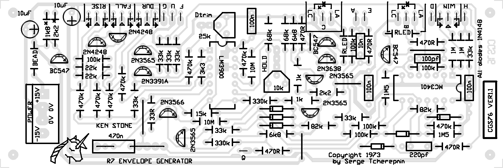

Serge Envelope Generator
for music synthesizers.
This is an adaptation of the original Serge Envelope Generator from the early "R" series PCBs. It has been produced under licence from Serge. This is NOT an ADSR style generator, and can be used as a voltage controlled LFO.
A little on how it works:
Construction

PCB connections:
A = start input
B = Window pulse output
C = envelope output
D = End pulse output
E = cycle input
F = Hold input
G = Duration CV
H = Window size CV
LA = LED Anode
LC = LED Cathode
Q = not used
PCB assembly notes.
- An LM3900 can be substuted for the lesser rated MC3401.
- All transistors on the board have pin-outs that correspond to the original epoxy type transistors. This means they have the emitter in the direction shown on the 2N4248 with the symbol in its outline. PN4248 are reversed - i.e. EBC from the flat face, rather than CBE as used on the PCB. A such, you will need to install any affected transistor substitutions in backwards with reference to the PCB. You will need to refer to the data for the transistors you are using.
-
BC557 can be substituded for all PNP transistors. BC547 can be substituted for all NPN transistors.
-
There is provision of the PCB for adding a LED to monitor both the Envelope Output and the Window Pulse Output. The connections are labelled LA (LED Anode) and LC (LED Cathode). They are positioned near the corresponding output pad.
- Pot connections are marked with arrows indicating the appropriate end of the pot's travel and the wiper (CCW arrow, CW arrow and triangle).
- Pot values are NOT critical. The original design used 25k for all pots. 100k pots work equally well, if not better. One 20k is listed in the parts list for use in the duration control, though a 50k or a 100k will work there, though giving a different curve response, and possibly a slightly larger range.
The associated 22k resistors marked # on the schematic should be replaced with values to match the associated pot. If you use a 100k pot, use 100k resistors, and so on.
- Resistors marked RLED determine the brightness of the LEDs. A 1k resistor can be used for low mcd LEDs. If you use a superbright LED, this value should be increased, to as much as 33k, dependent on the individual LED. Trial and error is the only way to correctly determine the value. This can be done with a LED, resistor and a power supply of approximately the same voltage as the positive rail of your synth. (i.e. +12V or +15V)
- 33k resistors marked # on the schematic could be replaced with 100k resistors to bring the input impedances up to more modern standards.
Set-up.
- DTRIM is used to set the initial cycle speed. Turn RISE and FALL to the fasted positions. Adjust DTRIM until you get 4.00 volts on pin 4 of the LM3900 (NOT the one marked MC3401 on the PCB). I did this with END patched to CYCLE.
- The second trim pot is to stabilize the HOLD function. Too high, the signal drifts, too low and the signal "pulses". To adjust this, plug the ENV out into a VCO, then trigger hold during an envelope. Adjust the trimpot using the VCO tone as a guide.
Comments on usage.
- The HOLD function only works when the Window Pulse Output LED is lit.
- The rise and fall pots are wired to control rate, not length. As such they seem backwards for envelope generator functions, but correct for LFO functions.
- To use it as a VCLFO, patch end to cycle, and feed a CV into duration.
Notes:
- PCB info: 2" x 6" with four 3mm mounting holes 0.15" in from the edges.
- Runs on +/-12 volts. To run on +/-15 volts, replace the 1k8* resistor with a 2k7 in the local 6 volt regulator
- Please email me if you find any errors.
| Part | Quantity |
| Capacitors |
|---|
| 100pF | 1 |
| 220pF | 1 |
| 10n | 1 |
| 100n | 3 |
| 100n 1206 SMT (optional) | 3 |
| 470n MKT or poly | 1 |
| 10uF 25V | 2 |
| Resistors |
|---|
| 33R | 1 |
| 470R | 5 |
| 1k | 2 |
| 1k8 | 1 |
| 2k2 | 2 |
| 3k3 | 1 |
| 6k8 | 2 |
| 15k | 1 |
| 22k | 2 |
| 33k | 7 |
| 68k | 2 |
| 82k | 2 |
| 100k | 5 |
| 330k | 2 |
| 470k | 7 |
| 1M | 2 |
| 1M5 | 2 |
| 10M | 2 |
| 10k trim pot | 1 |
| 25k or similar trim pot | 1 |
| 100k lin pot | 3 |
| 20k lin pot (see text) | 1 |
| RLED LED Resistors | 2 |
| Semi's |
|---|
| LED | 2 |
| 1N4148 | 6 |
| 2N3391A NPN | 1 |
| 2N3565 NPN | 4 |
| 2N3566 NPN | 1 |
| 2N3638 PNP | 1 |
| 2N4248 PNP | 2 |
| BC547 NPN | 3 |
| LM3900 | 1 |
| MC3401 or LM3900 | 1 |
| Misc. |
|---|
| Ferrite Bead | 2 |
| SPST switch | 3 |
| 0.156 4 pin connector | 1 |
| CGS75 PCB | 1 |
|
|
Parts list
This is a guide only. Parts needed will vary with individual constructor's needs.
Classic Serge style knobs can be purchased from
Small Bear Electronics LLC
phenolic clone of Davies 1900H
ABS clone of Davies 1900H
Colored ABS clones of Davies 1900H
If anyone is interested in buying these boards, please check the PCBs for Sale page to see if I have any in stock.
Can't find the parts? See the parts FAQ to see if I've already answered the question. Also see the CGS Synth discussion group.
Article, art & design copyright 2006 by Ken Stone
Modular Synth Home Disclaimer
|